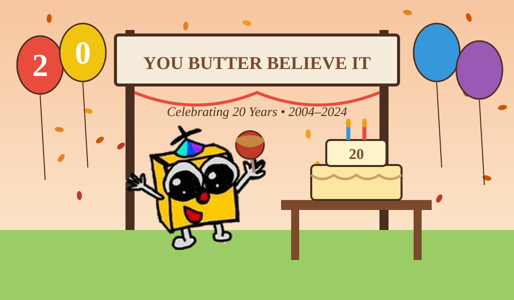

Twenty Years of Butter: BFF Celebrates Two Decades of Family Fun in Sandwich, Illinois

Sandwich, Illinois — October 1, 2024
On a crisp October morning in 2004, Darius and Buttercup Butters opened the gates of Butter Family Farms for the very first time. There was one ride, a midway that smelled like fresh popcorn, and a banner above the entrance that read: YOU BUTTER BELIEVE IT.
Twenty years later, the banner is still there.
Butter Family Farms marked its twentieth anniversary this weekend with a celebration that drew guests from across Illinois and neighboring states, including some who had been in the park on opening day. Season pass holders were treated to complimentary caramel apples from Sweet Churns, a commemorative anniversary pin, and a surprise appearance on the BBC — the park's signature 120-foot launched coaster — alongside Darius Butters himself, who strapped in for his first ride in what he admitted was "a very long time."
"I may have screamed," Butters told the crowd afterward. "I am not ashamed of that."
The weekend also included a retrospective display in the main midway featuring photographs from BFF's first season, early ride blueprints, and handwritten notes from employees and guests across the park's history. Several of BFF's longest-serving staff members were recognized at a private ceremony Friday evening, including Groundskeeper Nancy Norwood, who has maintained the park's grounds since 2007.
"This place has been part of my life for almost as long as I can remember," Norwood said. "I am proud of every inch of it."
The anniversary comes as BFF prepares for what Darius Butters has called the most significant chapter in the park's history. The family has hinted that plans to take the BFF brand beyond its Sandwich home will be shared with guests in the coming months.
For now, Sandwich remains the heart of it.
"Everything we build next starts here," Buttercup Butters said. "It always will."
Guests interested in booking visits to mark the anniversary season can find tickets and seasonal passes at butterfamilyfarms.com.
Media inquiries: Kathleen Fairweather, Social Media Specialist — kathleen.fairweather@butterfamilyfarms.com